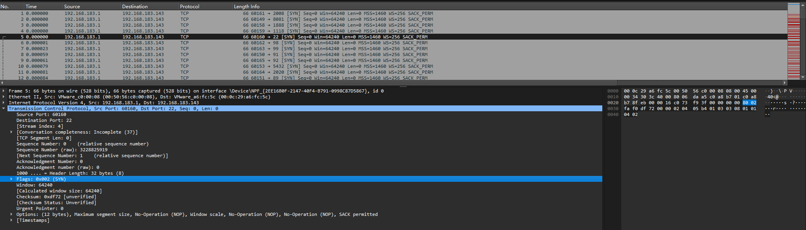

红队基础设施建设与改造（五）——Fscan从代码逻辑到二开
Fscan简介和基础结构
fscan是用Go语言编写的端口扫描工具，它具有高效、快速的特点，能够对目标主机的端口进行扫描，并识别开放的服务等信息。在内网探测的时候效果挺好，很多攻击队在打点突破拿到边界机之后都会喜欢上传fscan、frp等工具来进行内网探测，辅助横向移动进行下一步攻击
现在fscan已经重构生成了2.0版本，但是因为文章写慢了，刚开始 写的时候用的是1.x的版本，2.0也没细看，所以先分析1.x版本，后面有时间在写2.0（都鸽们，怎么会骗你呢），本文主要从fscan的源码入手，分析fscan的原理，并简单介绍如何进行fscan的免杀和魔改，如果没有go语言基础的同学建议学习一下
1代的最新版本是1.8.4，可在以下链接下载
https://github.com/shadow1ng/fscan/archive/refs/tags/1.8.4.zip
基本目录结构如下
Fscan ├─common ├─image ├─Plugins ├─WebScan ├─go.mod ├─go.sum ├─main.go ├─README.md └─LICENSE.txt
common是基础模块，包含了如启动参数解析、地址解析、日志记录、代理、基础配置等功能的实现源码
image是readme的图片存储目录
Plugins是插件目录，主要功能为实现ftp、rdp、mysql等服务的探测以及弱口令的检测
webscan是web扫描实现部分，用于使用内置的poc进行漏洞扫描
gomd和gosum就不说了
main.go是主方法，程序入口点
代码分析
从main.go入手分析
start := time.Now()记录了程序开始的时间，用于后续计算程序运行的总耗时
flag是打印logo和参数的模块，从common中能直接看到相关代码
顺便介绍一下参数
| 参数名 | 参数类型 | 默认值 | 描述 |
|---|---|---|---|
| -h | string | "" | 要扫描的主机IP地址，例如: 192.168.11.11 |
| -hn | string | "" | 不扫描的主机，例如: -hn 192.168.1.1/24 |
| -p | string | 默认端口 | 指定端口，例如: 22 |
| -pa | string | "" | 基于DefaultPorts添加端口，-pa 3389 |
| -usera | string | "" | 基于DefaultUsers添加用户，-usera user |
| -pwda | string | "" | 基于DefaultPasses添加密码，-pwda password |
| -pn | string | "" | 不扫描的端口，例如: -pn 445 |
| -c | string | "" | 执行命令 (ssh和wmi) |
| -sshkey | string | "" | ssh密钥文件 (id_rsa) |
| -domain | string | "" | smb域 |
| -user | string | "" | 用户名 |
| -pwd | string | "" | 密码 |
| -time | int64 | 3 | 设置超时时间 |
| -m | string | “all” | 选择扫描类型，例如: -m ssh |
| -path | string | "" | fcgi、smb远程文件路径 |
| -t | int | 600 | 线程数 |
| -top | int | 10 | 显示存活数量前几位 |
| -hf | string | "" | 主机文件，-hf ip.txt |
| -userf | string | "" | 用户名文件 |
| -pwdf | string | "" | 密码文件 |
| -portf | string | "" | 端口文件 |
| -pocpath | string | "" | poc文件路径 |
| -rf | string | "" | 写入sshkey文件的redis文件 (例如: -rf id_rsa.pub) |
| -rs | string | "" | 写入计划任务文件的redis shell (例如: -rs 192.168.1.1:6666) |
| -nopoc | bool | false | 不扫描web漏洞 |
| -nobr | bool | false | 不暴力破解密码 |
| -br | int | 1 | 暴力破解线程数 |
| -np | bool | false | 不进行ping扫描 |
| -ping | bool | false | 使用ping替代icmp |
| -o | string | “result.txt” | 输出文件 |
| -no | bool | false | 不保存输出日志 |
| -debug | int64 | 60 | 每次记录错误日志的时间间隔 |
| -silent | bool | false | 静默扫描 |
| -nocolor | bool | false | 不使用颜色输出 |
| -full | bool | false | poc全面扫描，例如: shiro 100 key |
| -u | string | "" | url |
| -uf | string | "" | url文件 |
| -pocname | string | "" | 使用包含pocname的poc，-pocname weblogic |
| -proxy | string | "" | 设置poc代理，-proxy http://127.0.0.1:8080 |
| -socks5 | string | "" | 设置socks5代理，将在tcp连接中使用，超时设置将不生效 |
| -cookie | string | "" | 设置poc cookie，-cookie rememberMe=login |
| -wt | int64 | 5 | 设置web超时时间 |
| -dns | bool | false | 使用dnslog poc |
| -num | int | 20 | poc速率 |
| -sc | string | "" | ms17 shellcode，例如 -sc add |
| -wmi | bool | false | 开启wmi |
| -hash | string | "" | hash |
| -noredis | bool | false | 不进行redis安全测试 |
| -json | bool | false | json格式输出 |
Scanner实现
Parse.go文件用于解析url、密码字典路径、指定用户名等等参数的相关内容，不展开了，感兴趣的可以自己去看一下
核心是Plugin.scan中的内容，在Plugin/scanner.go中，定义了Scan方法，在代码中可以看到定义了ch和wg两个参数控制多线程，并通过icmp进行主机识别
icmp主机识别的主要逻辑在同级目录的icmp.go中实现，根据注释可以看到优先尝试监听本地icmp进行批量探测，如果报错再尝试无监听icmp探测
构造的ICMP消息部分为makemsg，感觉也能作为fscan的特征（这个还没测试过，后面看情况分析）
完成主机识别后基于插件进行端口识别，端口识别的实现通过Plugins/portscan.go，也是用了多线程扫描的方式提升效率
根据上下文中的PortConnect函数，其实现扫描的方式是TCP连接扫描端口
检测完存活主机和端口扫描后，进入正式扫描流程，分析Scanner的其他部分，主要是AddScan和ScanFunc函数，通过反射调用的方式加载了扫描相关插件
扫描插件的定义在base.go中，其中的PluginList定义了插件，相关插件在Plugins目录下对应的go文件中，用于实现对应功能的扫描，如果要进行二开，增加插件等操作时也需要编写go脚本，并在插件列表中进行声明
选一个简单的模块进行分析，本文使用了postgres.go，这个模块用于实现potgresql的扫描，其实就是单独实现的漏洞检测逻辑，先从端口中匹配到5432端口，然后就调用该模块进行扫描，并检测弱口令
除了Plugins中的检测模块外，还有自带的webscan用于web漏洞探测，webscan模块在根目录的WebScan目录下实现，在插件的webtitle.go中进行调用
在该模块中，使用initpoc方法初始化poc，filterpoc方法解析poc，execute方法定义动作，webscan方法执行
在webtitle中，还有一个很有意思的地方，最后定一了一个GetProtocol方法，这个方法用于在端口为非常规web端口（80和443）时，通过该方法区判断协议并进行tls连接，如果使用go开发其他工具时可能会提供一些思路
其中对发包字段中的UA、Accept、Cookie等字段都在common/config.go中进行定义和修改，其中UA和Accept字段是硬编码的，建议修改来规避特征检测
websacn中还有一个infoscan模块，infoscan用于指纹识别，在InfoCheck方法中，通过info.RuleDatas进行正则匹配，判断对应的应用指纹
具体的应用指纹信息在WebScan/info/reles.go中进行了定义
再找一个poc进行分析，这里选用一个nacos的未授权访问漏洞作为模板
首先在name部分定义poc的显示名，匹配到对应漏洞后fscan会显示输出这个名称
set部分为参数，此处的r1和r2两个参数，使用随机的16位小写字符
rules部分为检测规则，method定义了请求方式，常规的HTTP请求如POST、GET、DELETE等；path定义请求路径；headers定义请求头，能包含UA、Accept等字段、expression为表达式，和pocsuite有点类似，通过响应码和页面内容判定是否存在漏洞
编译只需在根目录下执行如下命令，这个命令通过对ldflags和trimpath的参数的使用，省略符号表和调试信息、DWARF调试信息、去除文件路径信息等操作，让编译出来的文件相对特征没那么明显
go build -ldflags="-s -w " -trimpath main.go
但是仍然无情被杀，刚执行就被火绒直接识别出并且干掉了fscan，一会在讲二开的时候会讲到
流量分析
首先进行-h参数的自动扫描，然后用wireshark抓包，能确认是TCP全连接扫描

在端口探测完成后，fscan默认会针对已经识别到的服务进行扫描，如mysql，不断尝试进行登录（弱口令爆破），箭头处为登录请求，方框为响应，在fscan中，爆破检测到弱口令就会进行输出
此外，在上文中分析的源码部分也能发现ICMP Echo请求无载荷，超高请求速率+无载荷Echo的特征就很明显了
在检测到开放端口后会进入poc检测环节，此时数据包中会出现大量的http请求，是各种各种的路径
免杀
前文写到了按照官方推荐的编译参数一编译就被杀，先来分析一下特征，最常见的特征就是字符串，搜索一下能出现大量包含字符串
如果考虑便捷性，可以直接用garble进行编译
garble -tiny -literals -seed=random build -ldflags="-w -s" main.go
编译后重新使用strings命令时就几乎没有什么字段了，但是这边还出现了一些别的奇怪的字段，也算是泄露了特征
但是火绒已经过了
从源码上也进行一些修改，在源码中搜索fscan字符串时代码中有37处关键词，主要都是引入库的问题github.com/shadow1ng/fscan
首先在gopath的src目录下下新建一个目录用于存放代码文件，然后将common、Plugins、WebScan三个文件夹移动到对应目录，再将所有代码中的
github.com/shadow1ng/fscan统一替换为刚刚新建的目录文件夹名称（不用写全，只要文件夹名字就行了），进一步减少特征，重新编译后即没有相关字符串了
某数字也能过
上了VT也是效果拔群，就瑞星还是认出来了fscan，其他几个特征也不是很明显
二开——随机UA
前面核心代码已经分析了，可以来考虑二开了，二开部分先实现一个简单功能，别的看看以后再写吧，首先定位到config.go文件，看到其中关于UA的定义部分，此时的UA是定值

新功能准备使用随机的UA，将UA定义为一个列表，每次请求时从列表中获取UA，并将随机值赋给UA即可
var RandUAlist = []string{"UA列表"}
func getrandUA() string {
rand.Seed(time.Now().UnixNano())
index := rand.Intn(len(RandUAlist))
return RandUAlist[index]
}
var UserAgent = getrandUA()

重新进行编译，为了方便观察（主要是懒得再用wireshark抓了），重新启动时的参数将代理地址设置为BP的监听端口

再进行测试时可以看到UA头已经发生了改变

同理，如果觉得发包速度太快了可能容易被发现的话，也可以对PocNum和Thread参数进行随机化，可以控制每次的发包速率和线程等